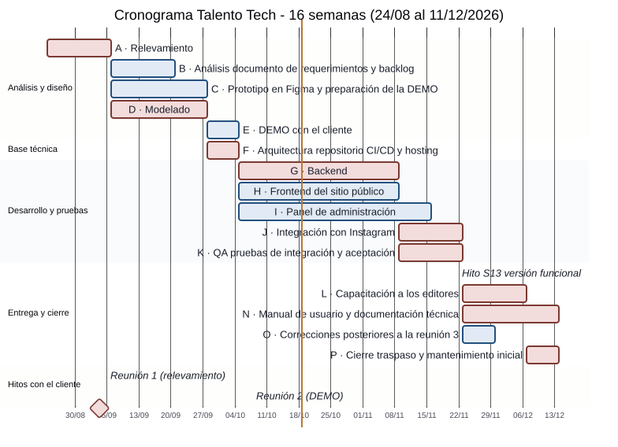

Modernización del sitio institucional del IFTS N.° 2
Comisión E · Equipo 08 · Santiago Cuda · Adrián Madroñal · Martín Juan · Nicolás Rolón · Gastón Zampar
Herramientas utilizadas y justificación. Cada herramienta cubre una necesidad de flujo, iteración o control del proyecto, y todas funcionan en plan gratuito.
| Necesidad | Herramienta | Evidencia | Por qué |
|---|---|---|---|
| Flujo de tareas (Kanban) y backlog | Trello, tablero ifts-n2-sprint-board-scrum | Tablero | Visualiza el flujo y el trabajo en curso; curva de aprendizaje mínima |
| Código y control de versiones | GitHub (repositorio con revisión cruzada) | Repositorio | Historial de decisiones y cambios verificable |
| Diseño y validación con el cliente | Figma | Prototipo | Permitió que el cliente rechazara la paleta antes de programar |
| Diagramas y documentación | Lucidchart, Google Drive | Diagramas, Drive | Trabajo compartido y enlaces públicos para la cátedra |
| Cronograma | Gantt y red CPM (secciones 7.2 y 7.3) | Figuras 1 y 2 | Muestra dependencias y camino crítico |
Metodología: Scrumban (justificación corregida). La Parte 1 descartaba Scrum argumentando el tamaño del equipo; la cátedra observó que ese no es un criterio válido. Scrumban se elige por tres necesidades del proyecto: (1) iteración, porque hay hitos fijos con el cliente (semanas 2, 6 y 13) que exigen incrementos revisables cada dos semanas; (2) flujo, porque las prioridades cambian según las devoluciones del cliente (por ejemplo, el rediseño de la paleta tras su rechazo) y un tablero continuo absorbe ese cambio sin replanificar un sprint completo; y (3) control, porque el límite de trabajo en curso (WIP) y la revisión cruzada de cada tarea detectan cuellos de botella temprano. Se mantienen del marco Scrum la planificación y la retrospectiva por sprint, y de Kanban el tablero con límite de WIP.
Sprints (2 semanas): S1 relevamiento (sem. 1-2) · S2 análisis y modelado (3-4) · S3 diseño y DEMO (5-6) · S4 base técnica y backend (7-8) · S5 desarrollo del panel y del sitio (9-10, en curso al 18/10) · S6 integración y QA (11-12) · S7 versión funcional y capacitación (13-14) · S8 cierre y traspaso (15-16).
Plan de seguimiento y control.
| Indicador | Meta | Umbral de alerta | Acción |
|---|---|---|---|
| Tareas completadas por sprint / planificadas | ≥ 80 % | < 60 % | Retrospectiva y recorte de alcance del sprint siguiente |
| Trabajo en curso por persona (WIP) | ≤ 2 tarjetas | > 3 | Terminar antes de empezar |
| Desvío del cronograma (semanas de atraso de la ruta crítica) | 0 | ≥ 1 | Aplicar el plan de contingencia de la sección 8 |
| Horas reales por integrante frente a las planificadas (680 h en total) | Desvío ≤ 10 % | > 15 % | Reestimar el presupuesto y recortar alcance (el aula pide documentar las horas para el presupuesto final) |
| Errores bloqueantes abiertos | 0 al hito | > 0 a dos semanas del hito | Congelar funciones nuevas |
| Respuesta del cliente a una validación | ≤ 5 días | > 10 días | Escalar a Martín Juan (canal único) y avanzar con datos de prueba |
Registro de reuniones. Las reuniones internas se resumen en actas en la carpeta de Drive del equipo [completar enlace a las actas].
| Fecha | Reunión | Resultado |
|---|---|---|
| 30/06/2026 | IFTS N.° 2 e IFTS N.° 29 (cátedra) | Roles cliente y oferentes, cronograma de tres reuniones |
| 04/09/2026 | Relevamiento con el cliente (S2) | Requerimientos, restricciones de costo, criterio editorial de redes |
| 06/10/2026 | Segunda reunión con el cliente: DEMO del prototipo en Figma | Roles diferenciados, calendario por archivos, MVP en código; el cliente pidió cambiar la paleta (luego se definió la de marrones); nueva reunión en 2 o 3 semanas |
Registro de decisiones relevantes.
| N.° | Decisión | Motivo |
|---|---|---|
| D-001 | Desarrollo a medida; la cátedra descartó WordPress | El alcance de la materia exige el ciclo completo de ingeniería de software |
| D-002 | Martín Juan, único canal con el cliente | Evitar respuestas contradictorias con tres equipos en paralelo |
| D-004 | El contenido vencido se archiva, nunca se borra | Pedido explícito del cliente ("un riesgo grave") |
| D-005 | Redes sociales: selección editorial del instituto | Criterio institucional humano, no réplica automática |
| D-006 | Infraestructura gratuita en la etapa inicial | El instituto no puede asumir costos |
| D-007 | Paleta tierra en lugar de la verde | Rechazo del cliente tras la DEMO |
| D-010 | La Etapa 3 se entrega como especificaciones para generar el MVP | Separar diseño técnico de implementación |
| Fase | Paquetes de trabajo | Responsable | Horas |
|---|---|---|---|
| 1. Análisis y requerimientos | Relevamiento, documento de requerimientos, backlog (A, B) | Martín Juan | 70 |
| 2. Diseño del sistema | Prototipo, diagramas UML, modelo de datos, DEMO (C, D, E) | Gastón Zampar, Nicolás Rolón | 110 |
| 3. Desarrollo | Arquitectura y CI/CD (F), API y base (G), sitio (H), panel (I), Instagram (J) | Nicolás Rolón, Gastón Zampar, Santiago Cuda | 280 |
| 4. Pruebas y calidad | QA de integración y aceptación (K) | Adrián Madroñal | 90 |
| 5. Capacitación | Capacitación a editores (L) | Martín Juan | 40 |
| 6. Manual y soporte | Manual de usuario y documentación técnica (N) | Gastón Zampar, Adrián Madroñal | 60 |
| 7. Mantenimiento | Correcciones, cierre y traspaso (O, P) | Santiago Cuda | 30 |
| Total (de 720 h disponibles: 5 personas × 9 h × 16 semanas) | 680 |
El cronograma tiene 16 semanas, del 24/08 al 11/12/2026, con los tres hitos de la cátedra. En rojo, las actividades críticas; la línea vertical marca la fecha de elaboración de este documento (semana 9).
Figura 1. Diagrama de Gantt del proyecto

Con las duraciones probables y las dependencias de la Figura 2, el proyecto dura 16 semanas, que es exactamente el cuatrimestre: no hay margen global. La ruta crítica es A → D → F → G → (J y K) → hito de la semana 13 → (L → P y N). Las actividades B, C, E, H, I y O tienen holgura de 1 o 2 semanas y funcionan como amortiguador.
Figura 2. Red de actividades con ruta crítica

Tabla. Cálculo CPM: tiempos más tempranos y más tardíos, en semanas desde el 24/08
| ID | Actividad | Resp. | Dur. (sem) | Pred. | ES | EF | LS | LF | Holgura | Crít. |
|---|---|---|---|---|---|---|---|---|---|---|
| A | Relevamiento (reuniones y requerimientos) | Martín | 2 | — | 0 | 2 | 0 | 2 | 0 | Sí |
| B | Análisis, documento de requerimientos y backlog | Martín | 2 | A | 2 | 4 | 3 | 5 | 1 | No |
| C | Prototipo en Figma y preparación de la DEMO | Gastón | 3 | A | 2 | 5 | 3 | 6 | 1 | No |
| D | Modelado: diagramas UML y modelo de datos | Nicolás | 3 | A | 2 | 5 | 2 | 5 | 0 | Sí |
| E | DEMO con el cliente (S6) y ajustes | Martín | 1 | C, D | 5 | 6 | 6 | 7 | 1 | No |
| F | Arquitectura, repositorio, CI/CD y hosting | Santiago | 1 | B, D | 5 | 6 | 5 | 6 | 0 | Sí |
| G | Backend: API, base de datos y autenticación | Nicolás | 5 | F | 6 | 11 | 6 | 11 | 0 | Sí |
| H | Frontend del sitio público | Gastón | 5 | E, F | 6 | 11 | 8 | 13 | 2 | No |
| I | Panel de administración | Gastón y Nicolás | 6 | E, F | 6 | 12 | 7 | 13 | 1 | No |
| J | Integración con Instagram (PoC y módulo) | Nicolás | 2 | G | 11 | 13 | 11 | 13 | 0 | Sí |
| K | QA pruebas de integración y aceptación | Adrián | 2 | G | 11 | 13 | 11 | 13 | 0 | Sí |
| M | HITO: versión funcional (reunión 3, S13) | Todos | 0 | H, I, J, K | 13 | 13 | 13 | 13 | 0 | Sí |
| L | Capacitación a los editores | Martín | 2 | M | 13 | 15 | 13 | 15 | 0 | Sí |
| N | Manual de usuario y documentación técnica | Gastón y Adrián | 3 | M | 13 | 16 | 13 | 16 | 0 | Sí |
| O | Correcciones posteriores a la reunión 3 | Todos | 1 | M | 13 | 14 | 14 | 15 | 1 | No |
| P | Cierre, traspaso y mantenimiento inicial | Santiago | 1 | L, O | 15 | 16 | 15 | 16 | 0 | Sí |
Para la parte de la ruta crítica anterior al hito de la semana 13 se usaron estimaciones de tres puntos: te = (O + 4M + P) / 6 y varianza ((P − O) / 6)².
Tabla. Estimaciones PERT de las actividades críticas hasta el hito de la semana 13
| Act. | Optimista | Probable | Pesimista | Esperada te | Varianza |
|---|---|---|---|---|---|
| A | 1.5 | 2 | 2.5 | 2.00 | 0.028 |
| D | 2 | 3 | 4 | 3.00 | 0.111 |
| F | 0.5 | 1 | 1.5 | 1.00 | 0.028 |
| G | 4 | 5 | 7 | 5.17 | 0.250 |
| J | 1.5 | 2 | 3 | 2.08 | 0.062 |
| Ruta crítica hasta el hito | 13.25 | 0.479 |
Lectura. La duración esperada hasta el hito es de 13,25 semanas con desvío estándar de 0,69. La probabilidad de llegar a la versión funcional dentro de la semana 13 es de 36 %, y de llegar dentro de la semana 14, de 86 %. Es decir, el hito de la semana 13 es ajustado: la incertidumbre se concentra en el backend (G, varianza 0,25) y en el modelado de datos (D). Por eso el plan de riesgos prioriza recortar alcance antes que extender plazos (sección 8) y acordar con el cliente que la reunión 3 puede mostrar un MVP con los módulos esenciales.
Escala: probabilidad (P) e impacto (I) de 1 (bajo) a 3 (alto); exposición = P × I. Orden por exposición.
Tabla. Registro de riesgos, evaluación y planes de mitigación y contingencia
| N.° | Riesgo | Tipo | P | I | Exp. | Mitigación (preventiva) | Contingencia (si ocurre) | Resp. |
|---|---|---|---|---|---|---|---|---|
| R1 | Retraso en la ruta crítica (backend) y no llegar al hito de la semana 13 (probabilidad calculada en 7.4) | Técnico | 3 | 3 | 9 | Contrato de API definido primero; trabajo en paralelo de frontend y panel con datos simulados; WIP limitado | Recortar a un MVP: novedades, horarios, archivo y login; el resto va a la semana 14 | Nicolás |
| R2 | La integración con la API de Instagram no resulta viable o el token vence | Técnico | 2 | 3 | 6 | Prueba de concepto temprana; módulo aislado detrás de una interfaz | Carga manual asistida desde el panel; el sitio no depende de la API | Nicolás |
| R3 | El cliente cambia o rechaza el diseño y obliga a rehacer (ya ocurrió con la paleta) | Cliente | 3 | 2 | 6 | Tokens de diseño centralizados; validar en Figma antes de programar | Cambio de tokens, sin rediseño de estructura | Gastón |
| R4 | Baja disponibilidad del cliente para validar y entregar contenidos | Cliente | 3 | 2 | 6 | Canal único; pedidos anticipados con fecha | Avanzar con datos de prueba; validar solo en reuniones 2 y 3 | Martín |
| R5 | Crecimiento de alcance (el Figma sumó avisos, archivo documental y configuración) | Alcance | 3 | 2 | 6 | Backlog priorizado (MoSCoW); todo pedido nuevo pasa por Martín | Posponer lo "Could" a la siguiente cohorte | Martín |
| R6 | Dedicación parcial, ausencias o sobrecarga del equipo | Humano | 2 | 3 | 6 | Revisión cruzada y conocimiento compartido entre pares; buffers de holgura | Reasignar tareas según holgura; reducir WIP | Martín |
| R7 | Infraestructura gratuita: suspensión por inactividad, límites de base de datos o de almacenamiento | Económico | 2 | 2 | 4 | Elegir planes sin vencimiento; compresión de imágenes; respaldos periódicos | Migrar a otro proveedor; costo mínimo aprobado con el cliente | Santiago |
| R8 | Datos personales y fotos de estudiantes sin consentimiento (Ley 25.326) | Legal | 2 | 3 | 6 | Aviso de uso de datos; publicar solo con consentimiento; mínimo de datos | Retiro inmediato del contenido | Adrián |
| R9 | Pérdida de datos o acceso indebido al panel | Técnico | 1 | 3 | 3 | Hash de contraseñas, roles, respaldos, secretos en variables de entorno | Restaurar el último respaldo; rotar credenciales | Santiago |
| R10 | Tres equipos con el mismo cliente generan pedidos contradictorios | Organizacional | 2 | 2 | 4 | Acuerdos por escrito; no asumir exclusividad | Priorizar lo confirmado por escrito | Martín |
| R11 | Trámite del dominio .edu.ar demorado | Externo | 2 | 1 | 2 | Iniciar documentación temprano | Subdominio provisorio gratuito | Santiago |
| R12 | Baja adopción del panel por parte de los docentes | Humano | 2 | 3 | 6 | Panel simple, capacitación con casos prácticos, manual | Sesión de refuerzo y acompañamiento en las primeras semanas | Martín |
Gestión del registro. El registro se abre en la definición del proyecto, se revisa al menos una vez por mes en las reuniones de seguimiento (cambios de probabilidad o impacto, planes de contingencia, riesgos nuevos) y ningún riesgo se elimina aunque pase su ventana, porque queda como aprendizaje. Cada riesgo tiene un responsable.
Mapa de calor. Exposición alta (6 a 9): R1, R2, R3, R4, R5, R6, R8, R12. Media (3 a 4): R7, R9, R10. Baja (1 a 2): R11. Los riesgos R1, R3 y R5 son los que la propia ejecución ya puso a prueba y se revisan en cada retrospectiva.
Estrategia de sostenimiento y financiamiento. Se trata de un desarrollo por encargo para una institución pública sin presupuesto: no hay pago por hitos, por lo que el sostenimiento se resuelve en cuatro frentes, tomados de las estrategias vistas en la materia:
Modelo de licenciamiento. Para el desarrollo por encargo la materia distingue la cesión total de derechos, la licencia de uso exclusiva o no exclusiva y la licencia abierta, esta última indicada cuando el cliente es una entidad pública o el proyecto tiene interés educativo o comunitario.
| Modelo | A favor | En contra | Evaluación |
|---|---|---|---|
| Licencia abierta MIT (propuesta) | Cliente público y proyecto educativo; el instituto y futuras cohortes pueden modificar y reutilizar; Talento Tech puede reutilizar sus componentes | No obliga a compartir las mejoras | Elegido |
| GPL v3 | Recomendada para proyectos comunitarios y educativos; mantiene libres las derivaciones | No permite integrarla con software propietario, lo que limita futuras adaptaciones comerciales | Alternativa válida |
| Cesión total de derechos | Propiedad completa del cliente | Impide que la empresa reutilice el código; reduce el valor del modelo de reutilización | Descartada |
| Propietario, freemium o SaaS | Control comercial, ingreso recurrente | Contradice el carácter público del cliente y exige un pago que el instituto no puede sostener hoy | Descartada por ahora |
Se adopta MIT para el código, con licencia de uso al IFTS N.° 2; los contenidos, textos, fotografías y la marca pertenecen al instituto (si decide abrir los contenidos, corresponde una licencia Creative Commons).
Prácticas sostenibles y control de calidad.
| Dimensión | Práctica |
|---|---|
| Económica | Infraestructura gratuita; documentación de traspaso para que el mantenimiento no dependa del equipo original |
| Ambiental | Código y recursos eficientes: imágenes comprimidas y servidas por CDN, carga diferida (lazy loading), caché de páginas públicas y menos solicitudes al servidor; sin servidores dedicados; integración continua que ejecuta pruebas solo cuando hay cambios; preferir proveedores con centros de datos de energía renovable; medición con Lighthouse |
| Social | Accesibilidad WCAG 2.2 AA; protección de datos personales (Ley 25.326); panel pensado para personal no técnico |
| Calidad | Criterios de ISO/IEC 25010 priorizados: adecuación funcional, usabilidad, seguridad, mantenibilidad y eficiencia; revisión cruzada de cada tarea; pruebas unitarias y de integración automatizadas (meta: 60 % de cobertura del backend); integración continua con GitHub Actions; definición de terminado con QA; retrospectiva por sprint |
Se sigue el método de la materia: se distingue el presupuesto de costo del presupuesto de venta; el costo total suma los costos directos y los indirectos prorrateados por la duración del proyecto; el precio de venta es costo total × (1 + ganancia); y el punto de equilibrio es costos fijos totales / (precio de venta − costo variable por proyecto).
Mano de obra: 680 horas a un valor referencial de USD 30 por hora, dentro del rango que la materia da para equipos de Sudamérica. Es un proyecto sin cobro: el valor sirve para dimensionar el servicio y evaluar su factibilidad.
Tabla. Presupuesto de costo por fase y concepto
| Concepto | Clasificación | Cálculo | Monto |
|---|---|---|---|
| 1. Análisis y requerimientos | Directo, variable | 70 h × USD 30 | USD 2.100 |
| 2. Diseño del sistema | Directo, variable | 110 h × USD 30 | USD 3.300 |
| 3. Desarrollo e implementación | Directo, variable | 280 h × USD 30 | USD 8.400 |
| 4. Pruebas y control de calidad | Directo, variable | 90 h × USD 30 | USD 2.700 |
| 5. Capacitación | Directo, variable | 40 h × USD 30 | USD 1.200 |
| 6. Manual y soporte | Directo, variable | 60 h × USD 30 | USD 1.800 |
| 7. Mantenimiento inicial | Directo, variable | 30 h × USD 30 | USD 900 |
| Subtotal costos directos de mano de obra | 680 h × USD 30 | USD 20.400 | |
| Hosting, base de datos, CDN y correo del proyecto | Directo, variable | Planes gratuitos | USD 0 |
| Licencias del proyecto (Trello, GitHub, Figma, Lucidchart) | Directo | Planes gratuitos | USD 0 |
| Dominio .com.ar (contingente) | Directo, fijo anual | Valor mencionado en la reunión | $8.500 ARS |
| Costos indirectos de la empresa (herramientas de uso general, administración, difusión) | Indirecto, fijo | USD 4.200 anuales × 16/52 (duración del proyecto) | USD 1.292 |
| Equipamiento, conexión y energía | Indirecto | Aportados por los integrantes | No imputado |
| Costo total estimado | USD 20.400 + USD 1.292 | USD 21.692 + dominio |
Presupuesto de venta. Con una ganancia del 25 %: precio de venta = USD 21.692 × 1,25 = USD 27.115; margen de ganancia = (1 − costo / precio) × 100 = 20 %. Como ese precio supera lo que el instituto puede pagar, el proyecto se desarrolla sin cobro y su valor está en la práctica profesional y en la base reutilizable. Como reserva de gestión se cuenta con las 40 horas que sobran entre las 720 disponibles y las 680 planificadas.
Supuesto del equipo: 4 horas mensuales de soporte y correcciones (48 h por año), es decir USD 1.440 por año de costo, a ofrecer como contrato de mantenimiento anual opcional (precio de USD 1.800 con ganancia del 25 %). El hosting cuesta USD 0 mientras alcance el plan gratuito; si hiciera falta un plan pago, se cotizará y se acordará con el instituto antes de aplicarlo (riesgo R7).
Factibilidad. Para el instituto es factible porque no tiene costo en dinero; para el equipo, porque las 680 horas entran en las 720 disponibles. No es viable como negocio de un único cliente institucional, porque el precio de venta supera cualquier presupuesto del instituto.
Punto de equilibrio con proyectos similares. Costos fijos de la empresa: USD 4.200 por año (supuesto del equipo, a validar).
| Escenario | Costo variable por proyecto | Costo total | Precio de venta (+25 %) | Margen unitario | Punto de equilibrio |
|---|---|---|---|---|---|
| Proyecto nuevo desde cero (como el actual) | USD 20.400 | USD 21.692 | USD 27.115 | USD 6.715 | 4.200 / 6.715 = 0.6, o sea 1 proyecto por año |
| Proyecto similar reutilizando la plataforma (120 h de adaptación en 4 semanas, más USD 100 de infraestructura) | USD 3.700 | USD 4.023 | USD 5.029 | USD 1.329 | 4.200 / 1.329 = 3.2, o sea 4 proyectos por año |
Conclusión. Un proyecto desde cero cubre los costos fijos del año, pero solo con un cliente que pueda pagar USD 27.115, que no es el caso del IFTS N.° 2. El modelo reutilizable baja el precio a unos USD 5.029 y hace accesible el servicio a instituciones con presupuesto reducido, pero exige 4 adaptaciones por año para equilibrarse. Por eso se combina con el contrato de mantenimiento anual opcional (USD 1.800 por institución), que aporta ingreso recurrente (sección 9).
La cátedra pidió consignar el origen de cada requerimiento. Negocio: surge de los objetivos o restricciones del instituto. Sistema: surge de condiciones técnicas, normativas o de calidad del producto. Fuentes: reunión de relevamiento (R04/09), notas del equipo (N) y normativa (L: Ley 25.326; W: WCAG 2.2).
Tabla. Origen y fuente de los requerimientos relevados
| ID | Requerimiento | Tipo | Origen | Fuente |
|---|---|---|---|---|
| RF01 | Administrar contenido desde un panel sin conocimientos técnicos | Funcional | Negocio | R04/09 |
| RF02 | Distinguir contenido estanco de dinámico | Funcional | Negocio | R04/09 |
| RF03 | Archivar contenido vencido sin eliminarlo | Funcional | Negocio | R04/09 |
| RF04 | Vincular publicaciones de Instagram y Facebook por selección editorial | Funcional | Negocio | R04/09 |
| RF05 | Soportar múltiples administradores | Funcional | Negocio | R04/09 |
| RF06 | Mostrar solo horarios y mesas del período vigente | Funcional | Negocio | R04/09 |
| RF07 | Accesos a SIU Guaraní, Aulas Virtuales y Mi Argentina | Funcional | Negocio | Documento "Páginas a vincular" |
| RF08 | Formulario de contacto a correo institucional | Funcional | Negocio | R04/09 |
| RF09 | Gestionar galería con descripción y categoría | Funcional | Negocio | R04/09 |
| RF10 | Gestionar plantel docente y materias | Funcional | Negocio | R04/09 |
| RNF01 | Usabilidad para personal no técnico | No funcional | Negocio | R04/09 |
| RNF02 | Infraestructura gratuita o de costo mínimo | No funcional | Negocio | R04/09 |
| RNF03 | Disponibilidad estable | No funcional | Sistema | N |
| RNF04 | Diseño responsive | No funcional | Sistema | N |
| RNF05 | Rendimiento con alto volumen de imágenes | No funcional | Sistema | R04/09 |
| RNF06 | Acceso al panel con autenticación | No funcional | Sistema | N |
| RNF07 | Accesibilidad WCAG 2.2 AA | No funcional | Sistema | W |
| RNF08 | Protección de datos personales | No funcional | Sistema | L |